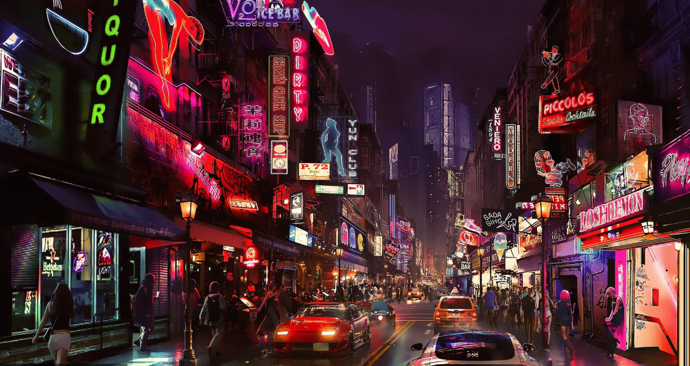
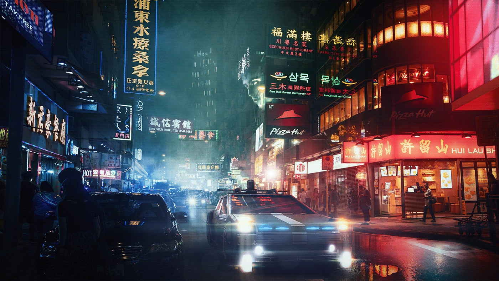
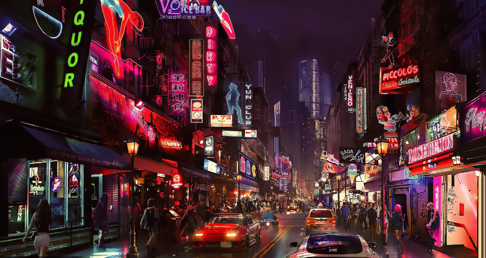
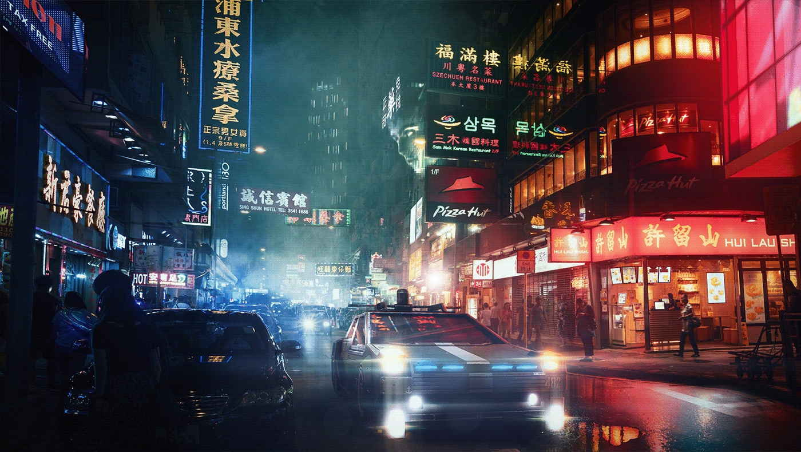

cyber art
if you hadn't noticed yet — i'm obsessed with cyberpunk. i work in the matrix, live in the real world, and dream of where the two collide. biotech, neural links, neon rituals. here you'll find a curated stream of visual, sonic, and cinematic signals from the neon void.
movies
movies are our shared hallucinations. in the cybervoid, stories flicker in chrome and shadow — hackers, outlaws, and posthuman dreams. here's a selection of flicks that shaped the neon mythos.

ghost in the shell (1995)
philosophy, hacking, and stunning animation — a pillar of the genre.

blade runner (1982)
the og cyberpunk — noir, neon, and replicants in dystopian la.
robocop (1987)
corporate control, cyborg justice, and brutal satire.
akira (1988)
post-apocalyptic tokyo, psychic teens, and iconic animation.
tetsuo: the iron man (1989)
japanese industrial horror-cyberpunk — weird, raw, unforgettable.
johnny mnemonic (1995)
keanu storing data in his brain — pure 90s cyberpunk cheese.
strange days (1995)
illegal vr memories + end-of-the-millennium paranoia.
the lawnmower man (1992)
virtual reality experiments gone wrong.
music
cyberpunk has a sound — pulsing basslines, synthetic memories, frequencies from the grid. tune in and dissolve into signal. this is the soundscape of neon city nights and digital dawns.
mitch murder — breaker
dynatron — pulse power
perturbator — future club
home — resonance
visuals
the visual cortex of the net. socially fractured cities, neon gods, lost data spirits. this gallery collects stray signals and luminous fragments from the network’s dreamspace, our reality.
 


